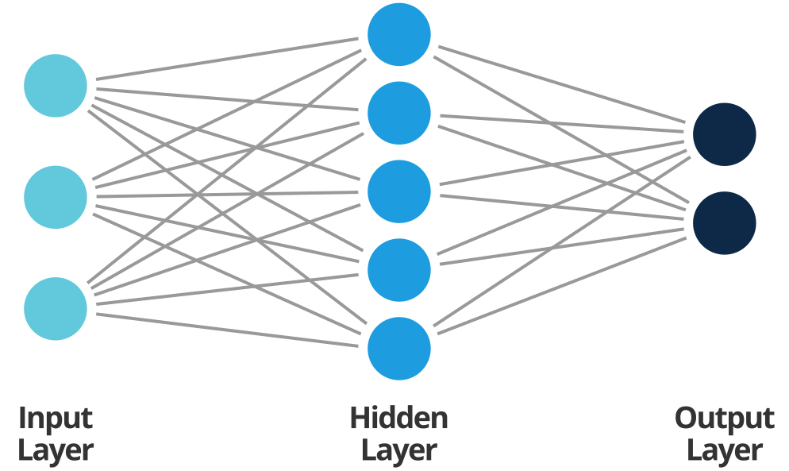
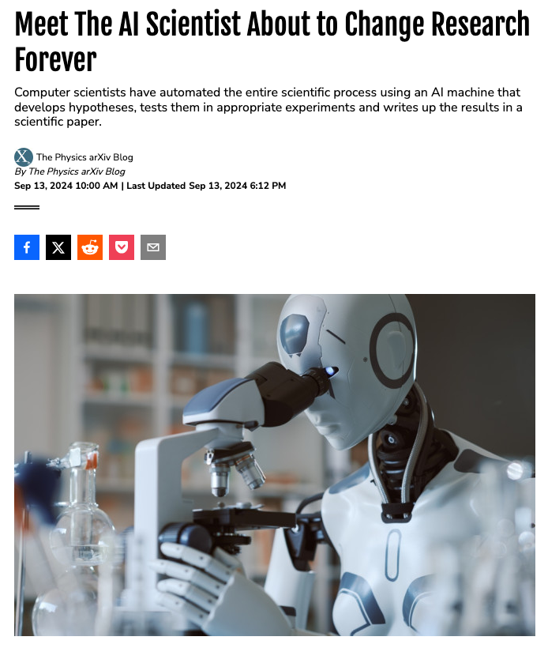
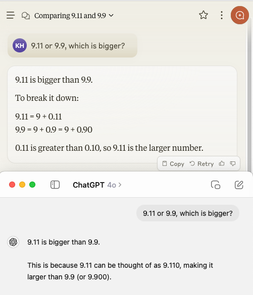
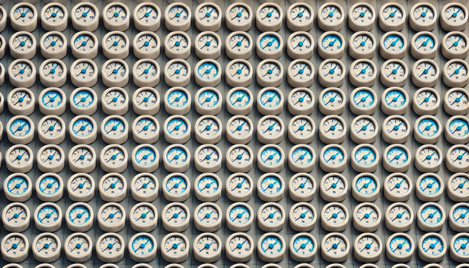
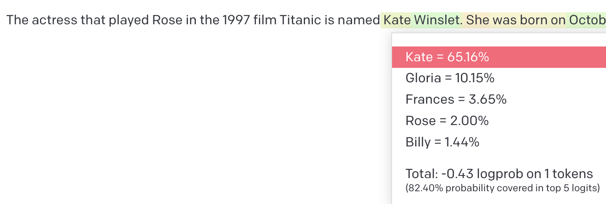
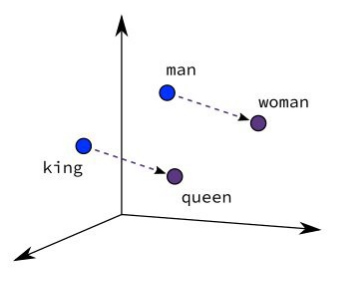
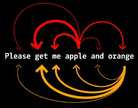
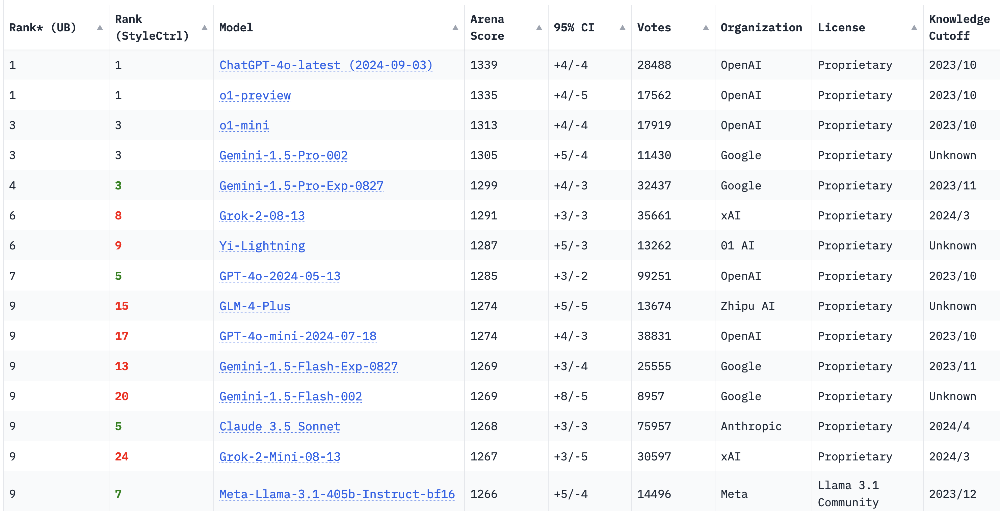

How do Large Language Models (LLMs) work?
Mastering AI Chatbots: Optimizing Research through Effective Use
Konstantin Hebenstreit
2024-10-29
AI and Science
 Source: Discover Magazine

How does AI work?
Input
→
AI Model
→
Output
AI

→
Image Classification Model
→
Lemon
LLMs
Text
→
Large Language Model
→
Text
LLMs
Text
→

→
Text
LLMs: Autocomplete
Context length
“The actress that played Rose in the 1997 film Titanic is named…”
→
→
Predicts the next word
Next word prediction
In technical words
- Deep Learning: Multiple layers of “neurons”
- Linear regressions calculate “weights” for the connections
- Input layer: Quantitative representation of sentence
- Output layer: One-hot encoding
Text representation
Words
Even though the sound of it is
something quite atrocious, if you
say it loud enough, you’ll always
sound precocious,
Supercalifragilisticexpialidocious!
Marry Poppins
→
Tokens = “Subwords”

Dictionary
Text representation
Word/Token
Even …
→
Word Embedding [-0.3185, 0.5976, 0.4817, 0.7306, -0.5938, -0.6372, 0.9381, -0.9165, -0.9396, 0.3540, 0.0262, -0.6131, 0.3634, -0.0391, -0.4732, -0.2341, -0.8044, -0.3637, -0.5958, -0.8710, 0.3722, -0.8544, -0.7819, -0.5487, -0.9314, 0.3949, -0.3168, -0.3363, -0.6973, -0.3789, 0.7200, -0.6201, -0.7010, -0.3735, 0.7437, -0.9795, -0.4916, 0.2130, 0.6817, 0.1972, 0.8518, -0.8700, -0.4013, -0.6310, -0.9597, 0.2763, -0.9173, 0.2900, -0.1896, 0.8286, -0.8617, 0.2566, 0.7024, -0.2448, 0.0994, -0.6664, -0.0699, -0.5830]
Representing the meaning of words
Word embeddings

Contextual word embeddings
- Context (before and after the word) taken into account
- Example “Apple”: Mac or fruit?

What is an LLM, actually?
- Large Language Models (LLMs): Deep learning neural networks built to understand and generate text
- Trained on vast amounts of text from diverse sources (Internet, Wikipedia, social media, books, podcasts, etc.)
- Convert text data into statistical patterns to predict words and sentences
How are LLMs trained?
GPT: Generative Pre-trained Transformer models (a model architecture for efficient computing):
- Generative: Produces/Generates Text
- Pre-trained: on large text corpus.
- Autoregressive: Always predicts the next word of a text. Does not need any annotation.
- Transformer: type of the language model
Change in model training
Changes of how models are trained over time. - seperate models for different tasks, e.g. translation - pre-train models on language, then fine-tune on task (e.g. BERT) - Today: Fine tune model on conversation settings. Give model the task in the context window. No need for
RAG
Models can look up databases for specific information. Makes their outputs more exact. E.g. facts. Or very up-to-date information Can be everything, from Wikipedia, medical textbooks, internal files of companies.
Pre Training
Fine-tuning
Chain of thought reasoning
- potential example from here: https://big-picture.com/media/the_prompt_engineering_cheat_sheet.pdf
https://arxiv.org/abs/2201.11903
Current top models
- ChatGPT-4o and o1 (Open AI)
- Claude 3.5 Sonnet (Anthropic)
- Gemini 1.5 pro (Google)
best non-proprietary: - Llama 3.1 (Meta)
Strengths of different models and interfaces
- ChatGPT-4o (Open AI): web search, code execution, multimodal interactions, custom GPTs with document upload. (128,000 tokens)
- Claude 3.5 Sonnet (Anthropic): Writing style, beautiful text rendering, custom projects. (200.000 tokens)
- Gemini 1.5 pro (Google): web search, code execution, multimodal interactions, integration with Google services, custom models. (up to 2 million tokens)
Multimodal interactions
Most with ChatGPT and Gemini, some with Claude. Only Claude: Artifacts, formatting text and websites.
- File Uploads (& Claude)
- Browse
- Discovering and using custom GPTs (& Claude: projects)
- Upload & analyze images (& Claude)
- Create images with DALL-E
- Audio: Talking/Listening
- Data analysis (& Claude)
- Execute code
Screenshots Benefits GPT/Claude
Chatbot Arena
Human ratings of chatbot responses 
Rank (UB): model’s ranking compared to other models
Rank (StyleCtrl): model’s ranking with style control (lenght, formatting, etc.)
Source: Chatbot Arena - Leaderbord
Different ChatGPT versions
- ChatGPT4: more resource intensive = expensive
- ChatGPT4o: optimized to be faster and cheaper
- ChatGPT-4o mini: every day tasks
- o1-preview: thinks before it answers, for complex tasks (no web search)
\(\rightarrow\) Konstantin’s default: GPT4
Discussion
- In groups of 3 (10 minutes):
- Which problems do you encounter when using LLMs?
- What works well?
- 5 minutes for sharing most important points with the whole group